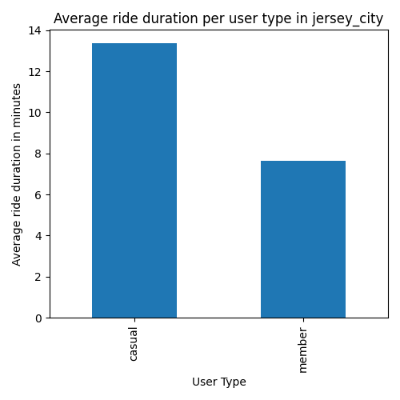
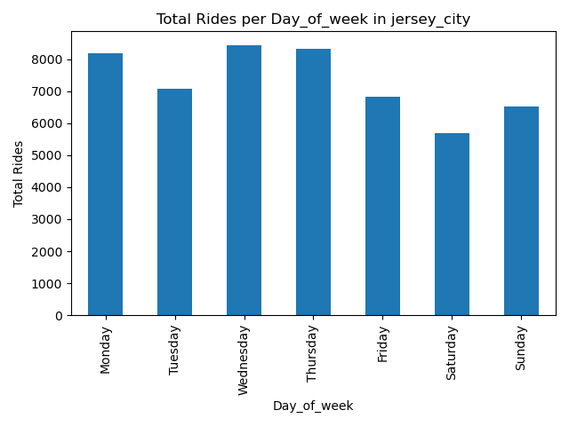
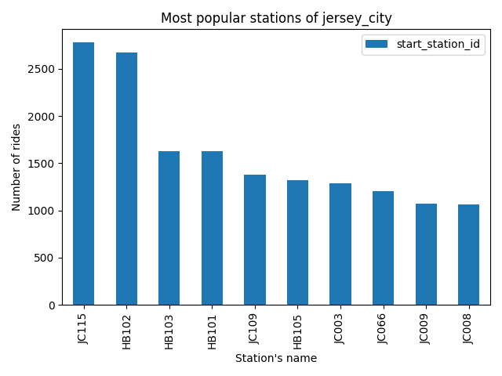
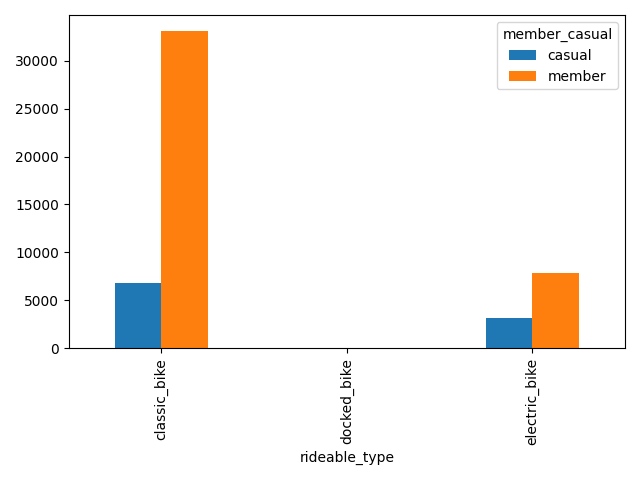
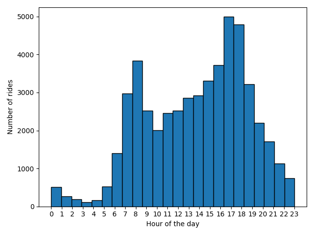
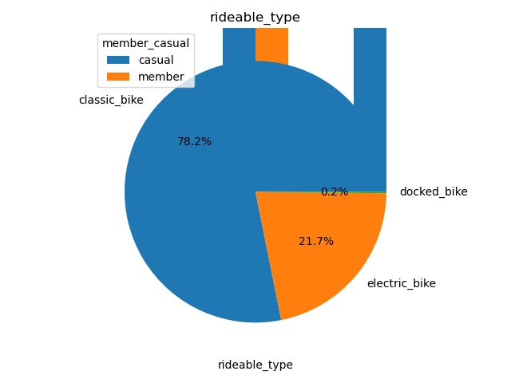

jersey_city Bike Share Analysis Report
Ride Types
Number of Classic Rides: 39913
Number of Electric Rides: 11059
Total Rides: 51069
Average Ride Duration
Average Ride Duration: 0 days 00:08:46.967494957 minutes
Most Popular Stations
Most Popular Start Station: Grove St PATH
Most Popular End Station: Grove St PATH
User Types
Number of Casual Users: 10084
Number of Members: 40985
Average Ride Duration per User Type

Total Rides per Weekday

Most Popular Start Stations

Rideable type by user category

Time slots for bike use

Rideable type use
